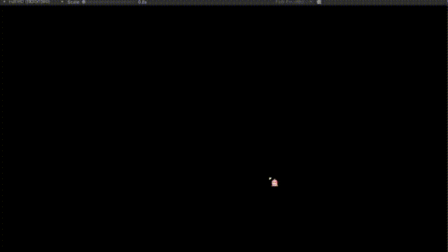

# UnityUI 淡入淡出
在 Unity 中实现各种与 UI 相关的淡入淡出的效果，例如：游戏进入和退出的淡入淡出，角色受伤时屏幕出现红色闪烁......
# 代码部分
- 由父类提供主要的方法，由子类实现其他细节
- 使用单例模式，可以更方便的寻找组件
- 利用 Image 组件实现屏幕遮罩
- AnimationCurve（动画曲线）可以调整淡入淡出的过渡效果
- 颜色变化的处理：可以用 Update，也可以用协程（本文使用协程）
父类
using Common; | |
using System.Collections; | |
using UnityEngine; | |
using UnityEngine.UI; | |
namespace Default | |
{ | |
[RequireComponent(typeof(Image))] | |
/// <summary> | |
/// 屏幕淡入淡出 | |
/// </summary> | |
public abstract class ScreenFade<T> : MonoSingleton<T> where T : MonoSingleton<T> | |
{ | |
[Tooltip("过度时间")] | |
public float Duration = 0.5f; | |
[Tooltip("颜色过度的动画曲线")] | |
public AnimationCurve Curve = AnimationCurve.Linear(0, 0, 1, 1); | |
/// <summary> | |
/// 遮罩图片 | |
/// </summary> | |
private Image ImageMask; | |
protected override void Init() | |
{ | |
base.Init(); | |
ImageMask = this.GetComponent<Image>(); | |
} | |
/// <summary> | |
/// 开启淡入淡出 | |
/// </summary> | |
/// <param name="beginColor"> 起始颜色 & lt;/param> | |
/// <param name="endColor"> 结束颜色 & lt;/param> | |
protected void StartFade(Color beginColor, Color endColor) | |
{ | |
this.StopAllCoroutines(); | |
this.StartCoroutine(ToStartFade(beginColor, endColor)); | |
} | |
/// <summary> | |
/// 开启淡入淡出 | |
/// </summary> | |
/// <param name="beginColor"> 起始颜色 & lt;/param> | |
/// <param name="endColor"> 结束颜色 & lt;/param> | |
/// <returns></returns> | |
private IEnumerator ToStartFade(Color beginColor, Color endColor) | |
{ | |
// 动画曲线的 X 轴 | |
float x = 0; | |
while (x <= 1) | |
{ | |
ImageMask.color = Color.Lerp(beginColor, endColor, Curve.Evaluate(x)); | |
x += Time.deltaTime / Duration; | |
yield return null; | |
} | |
} | |
} | |
} |
子类（例子：游戏进入和退出的淡入淡出）
using UnityEngine; | |
namespace Default | |
{ | |
/// <summary> | |
/// BeginScreenFade | |
/// </summary> | |
public class GameScreenFade : ScreenFade<GameScreenFade> | |
{ | |
[Tooltip("游戏开始的渐变起始颜色")] | |
public Color BeginScreenBeginColor = Color.black; | |
[Tooltip("游戏开始的渐变结束颜色")] | |
public Color BeginScreenEndColor = Color.clear; | |
[Tooltip("游戏结束的渐变起始颜色")] | |
public Color EndScreenBeginColor = Color.clear; | |
[Tooltip("游戏结束的渐变结束颜色")] | |
public Color EndScreenEndColor = Color.black; | |
/// <summary> | |
/// 淡入游戏 | |
/// </summary> | |
public void BeginScreenFead() | |
{ | |
base.StartFade(BeginScreenBeginColor, BeginScreenEndColor); | |
} | |
/// <summary> | |
/// 淡出游戏 | |
/// </summary> | |
public void EndScreenFead() | |
{ | |
base.StartFade(EndScreenBeginColor, EndScreenEndColor); | |
} | |
} | |
} |
子类（例子：角色受伤时屏幕出现红色闪烁）
using UnityEngine; | |
namespace Default | |
{ | |
/// <summary> | |
/// DamageScreenFade | |
/// </summary> | |
public class DamageScreenFade : ScreenFade<DamageScreenFade> | |
{ | |
[Tooltip("受伤起始颜色")] | |
public Color DamageBeginColor = Color.red; | |
[Tooltip("受伤结束颜色")] | |
public Color DamageEndColor = Color.clear; | |
/// <summary> | |
/// 受伤时的屏幕效果 | |
/// </summary> | |
public void DamageScreen() | |
{ | |
base.StartFade(DamageBeginColor, DamageEndColor); | |
} | |
} | |
} |
# 测试
using UnityEngine; | |
namespace Default | |
{ | |
/// <summary> | |
/// FadeTest | |
/// </summary> | |
public class FadeTest : MonoBehaviour | |
{ | |
private void Update() | |
{ | |
if (Input.GetKeyDown(KeyCode.A)) | |
{ | |
GameScreenFade.Instance.BeginScreenFead(); | |
} | |
if (Input.GetKeyDown(KeyCode.S)) | |
{ | |
GameScreenFade.Instance.EndScreenFead(); | |
} | |
if (Input.GetKeyDown(KeyCode.D)) | |
{ | |
DamageScreenFade.Instance.DamageScreen(); | |
} | |
} | |
} | |
} |
